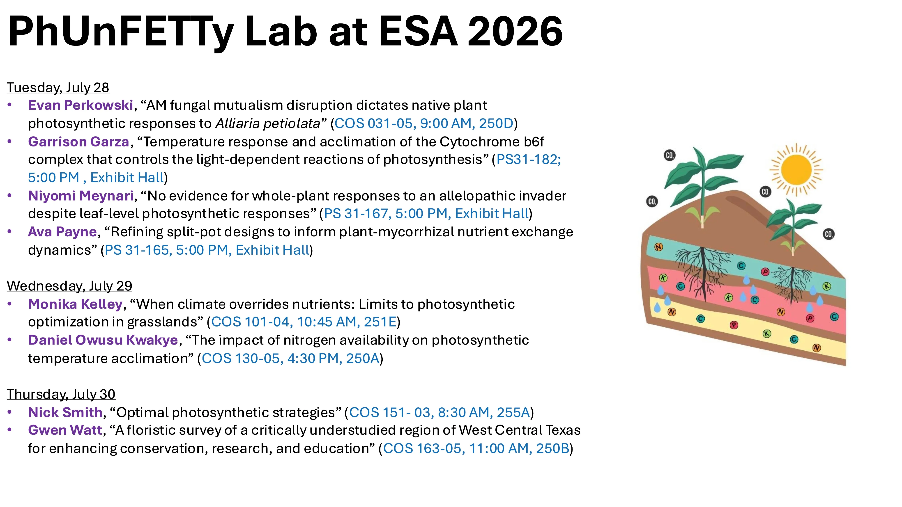

The lab will be giving a large number of presentations at the 2026 Ecological Society
of America Meeting.
On Tuesday, Evan will be discussing some very exciting initial results
from our growth chamber tracer experiment that resolves mechanisms of allelopathy-induced
mutualism breakdown impacts on native plant physiology. Ava will be discussing
the split pot design used for that experiment and Niyomi will be discussing some of the physiology
results that Evan will not be able to get to in his talk. Finally, Garrison will
be showing results from his first chapter examining the temperature responses of the
Cytochrome b6f complex.
On Wednesday, Monika and Dan will be presenting work from their theses. Monika
will discuss field results on community-level responses to eutrophication. Dan will be
showing his first chapter results on the influence (or lackthereof!) of soil nitrogen
availability on temperature acclimation.
Finally, on Thursday, Gwen will be presenting her thesis work, which developed
a flora for the region of the Edward's Plateau in Junction, TX. Nick will be showing new work
on simulating optimal photosynthetic strategies. Come check it out!
